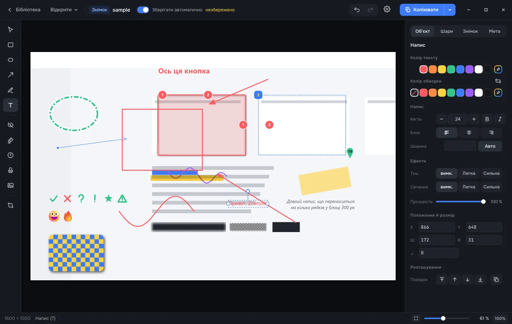
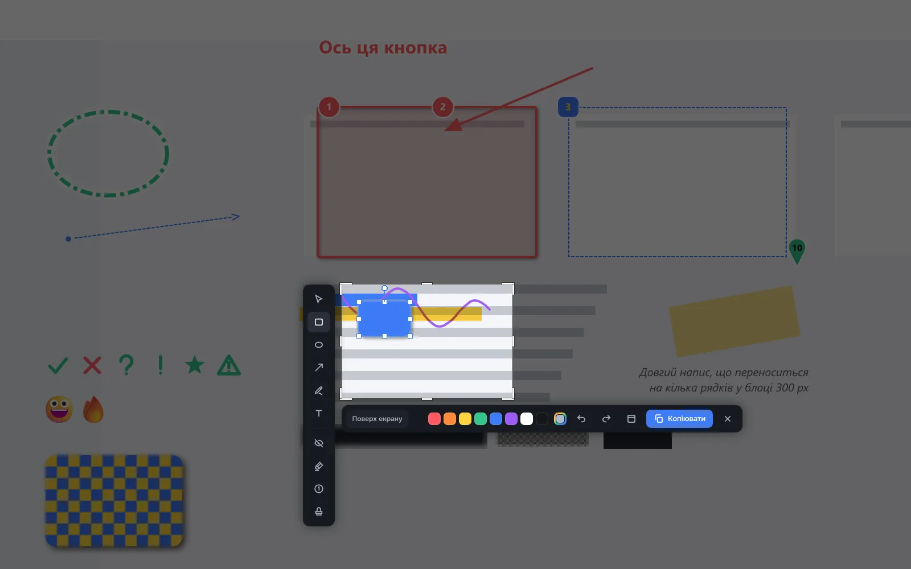
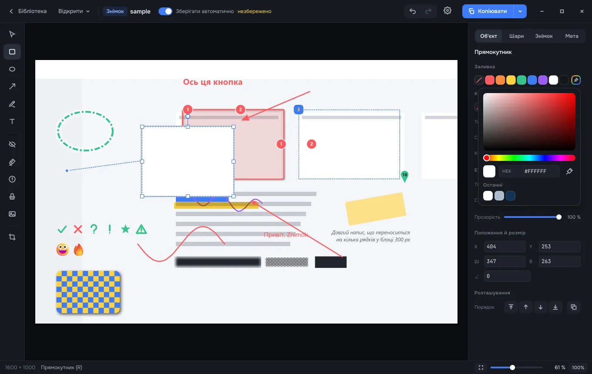
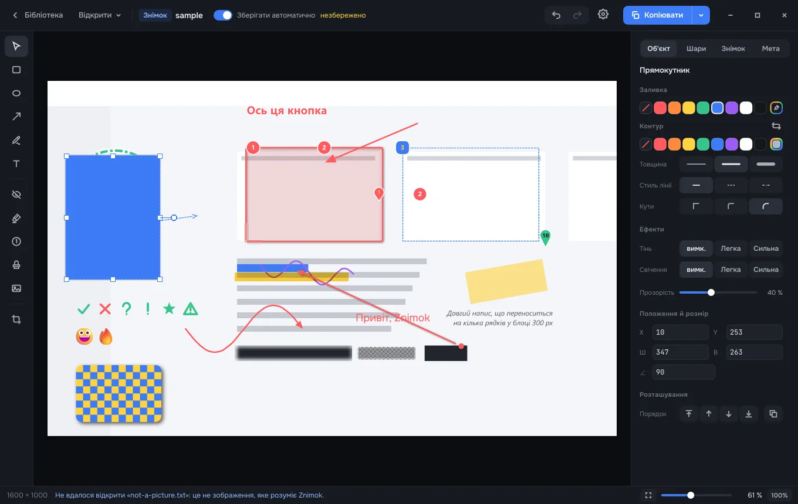

Знімки екрана, у яких позначки лишаються живими
Стрілку, напис чи приховану ділянку можна поправити й через тиждень. Знімки лежать у бібліотеці на вашому комп'ютері, результат іде в буфер, у файл або одразу людині чи AI-агенту.

Що вміє
Знімок як треба
Ділянка, вікно без того, що його перекриває, або весь екран — на кількох дисплеях, з лупою, відліком 3-2-1 і прокруткою довгих сторінок.
Три дії на відпускання
Відкрити в редакторі, одразу в буфер і бібліотеку або правити просто поверх екрана. Що робить кожен жест, вирішуєте ви.
Редактор без втрат
Рамки, стрілки, текст, лічильники, штампи, маркер, приховування, поворот позначок, будь-який колір з піпеткою. Скасовується все.
Бібліотека
Мініатюри, пошук, кошик. Тека — ваша: можна покласти на хмарний диск, Znimok побачить зміни.
Для людей і агентів
Копіювати, перетягнути в чат, експорт у PNG/JPEG/WebP з метаданими. Для AI-агентів — сервер MCP і команда znimok.
Нікуди не дзвонить
Без телеметрії й реклами. Сам Znimok ходить у мережу лише перевірити оновлення — і це вимикається.
Як виглядає



Встановлення
Windows 11
- Запустіть
.msi— права адміністратора не потрібні. - Поки інсталятор не підписаний, SmartScreen скаже «Windows захистила ваш ПК»: «Докладніше» → «Все одно запустити».
- Знімок — Alt+Shift+4 або «Новий знімок» у треї.
macOS 15+
- Відкрийте
.dmgі перетягніть Znimok у «Програми». - Поки Znimok не нотаризований: спробуйте відкрити, потім «Системні параметри» → «Конфіденційність і безпека» → «Все одно відкрити».
- Дайте дозвіл «Запис екрана»; знімок — ⌃⇧4.